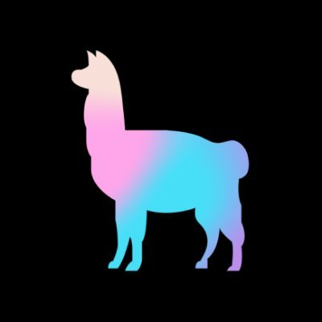
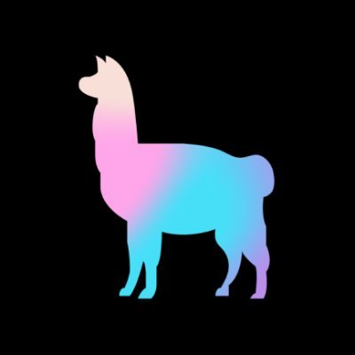
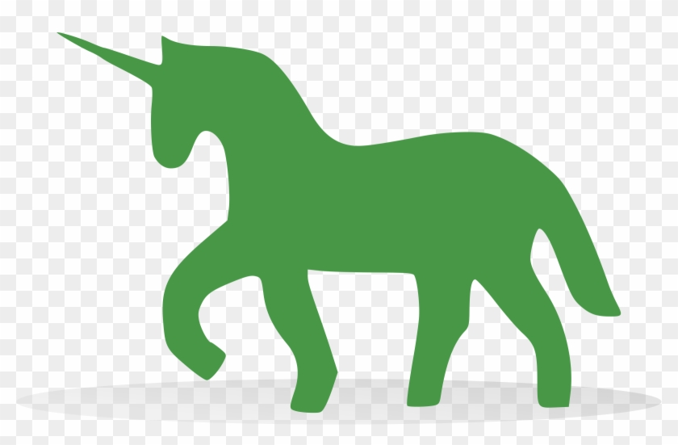
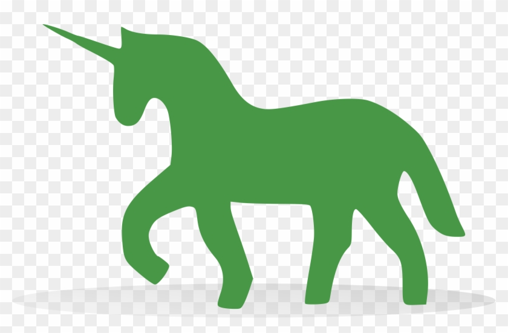
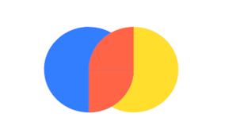
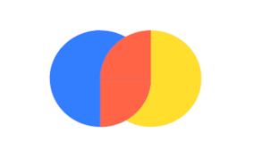

Product Features
Provides Interactive QA Bot
- Chat with your documents by asking questions in the chatbot.
- The retrieved context will be shown on the left for the user to verify the correctness of the bot's response.
- Each indexing pipeline will have its own chatbot.
Supports Query Enrichment
- Enables users to enrich the query for better retrieval and LLM responses.
- Supports subquery generation to fetch answers for multiple queries in a single request.
- Supports query cleaning and query rewriting for better retrieval and LLM response.
Provides Evaluation Metrics
- Enables users to evaluate the performance of the retriever and LLM responses.
- Context relevance score helps in evaluating the retriever's performance.
- Response hallucination score helps in evaluation the LLM response quality.
Provides Query Suggestions
- Provides query suggestions to the user if a user includes HyPE in the indexing pipeline.
- Enables user to view the query suggestions for each document separately.
- Helps a user in getting an overview of the questions a document can answer.
Enables Context Enrichment
- Enables a user to enhance the context using HyPE technique.
- User can select the number of hypothetical queries to generate.
- Improves retrieval quality by comparing user's query with hypothetical queries for similarity.
Customizable QA Chat Bot Settings
- User can configure chat settings for each indexing pipeline independently.
- User can configure LLM, temperature, retriever settings, hybrid search settings and re-ranking settings.
- User can restore the default chat settings provided by the application anytime.
Customizable QA Chat Bot Prompt
- User can configure prompt template according to their documents and requirements.
- Users can configure the prompt template for each indexing pipeline independently.
- User can restore the default prompt template provided by the application anytime.
Provides Multiple Splitters
- Provides 5 splitters to chunk the documents.
- Supports custom splitters like Regex Splitter, PDF Font Splitter and Dummy Splitter.
- User can apply different splitter for different documents based on the document structure which ensures smart chunking.
Provides Metadata Extractor
- Provides metadata extractor to extract metadata using regular expressions from documents.
- Extracted metadata can be used in splitters to enable self querying.
- Self querying enables user to filter and retrieve the documents based on metadata.
Supports Text and PDF Documents
- Supports text and pdf document types.
- Users can upload the documents from their local storage.
- Total size of documents should be less than 5MB.
- Individual document size must be less than 1MB.
Provides Document Viewer
- Enables a user to view the raw file content as well as the fonts in a PDF file.
- This enables the user to decide the chinking strategy to use.
- Aids in smart chunking strategy as per the document structure.
Supports Vector Store Index
- Supports multiple sentence embedding models like Mixedbread AI's mxbai-embed-large-v1 and all-mpnet-base-v2.
- Enables a user to configure the embedding batch size.
- Supports vector stores like ChromaDB and Pinecone.
Provides Document Chunk Viewer
- Enables users to view the chunks before building an indexing pipeline.
- Enables users to compare multiple splitters and choose the best one for their documents.
- Enables users to apply multiple splitters to a document.
View Pipeline Configuration
- Users can view the indexing pipeline configuration.
- Displays indexing pipeline configuration details like files ingested, splitters used and embedding settings.
- Viewing the files ingested improves the chat experience for the user enabling him to ask relevant questions.
 

 


 
